Decoupled Gaussian Modeling
Optimize one shared world-aligned Gaussian field with instance supervision and a Gaussian Grouping classifier head, then expose class-conditioned object and background subsets.
Manuscript in preparation · 2026
Real observations are reconstructed into decoupled object Gaussian assets and synchronized with a mutable robot-simulation scene.
RGB-D observations update object-level Gaussian assets in a mutable robot-simulation scene.
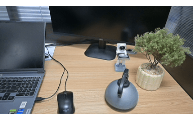
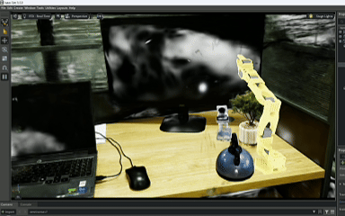
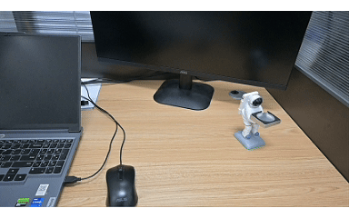
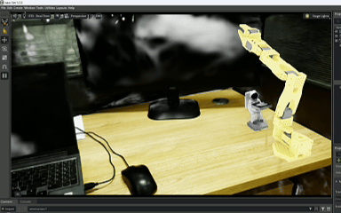
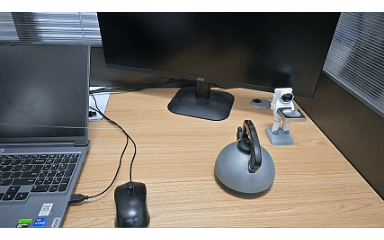
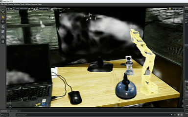
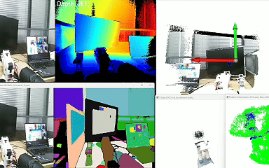
The GIFs are qualitative homepage demonstrations from the local results folder. They illustrate object-level composition and synchronization behavior, not robot task success rates or full runtime statistics.
Robot simulation requires reusable scene assets whose states can be updated from real observations at object granularity. Existing 3D Gaussian Splatting pipelines primarily optimize whole-scene rendering and leave object-background responsibility and simulation-side state transfer under-specified.
DGSRSim optimizes one world-aligned Gaussian scene model and partitions its primitives into movable object subsets and a retained background subset through cross-view instance supervision and out-of-mask response suppression. Online RGB-D observations are converted into cleaned object point clouds, aligned with asset-derived references by coarse-to-fine registration, and transferred to the simulator after quality filtering. Under the evaluated configuration, the object-region PSNR reaches 28.67 dB, the translation and rotation errors are 1.12 cm and 1.7 degrees, and the four stage means sum to 73 ms per processed update.
Optimize one shared world-aligned Gaussian field with instance supervision and a Gaussian Grouping classifier head, then expose class-conditioned object and background subsets.
Capture Kinect RGB-D frames, enforce strict color-depth alignment, segment the target object, and crop a filtered object point cloud.
Register online object point clouds against asset-derived reference geometry using coarse-to-fine alignment and registration-quality filtering.
Convert Gaussian PLY outputs into simulation assets and write object states into LeIsaac/IsaacLab scenes.
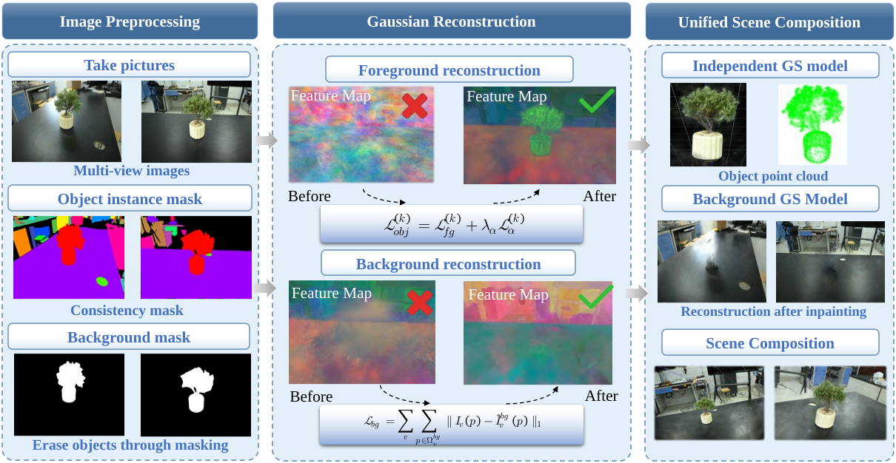
Class-conditioned filtering exposes each object's Gaussian subset after joint optimization, allowing the exported subset to be transformed, reused, and synchronized independently.
Removing an object's assigned primitives leaves the retained background and other object subsets; all subsets inherit the same coordinate basis and require no cross-model alignment.
The classifier supports 2 to 256 labels, including background label 0. The released configuration uses 256 outputs and assigns targets only to the background and active objects.
Movable object assets can be added, removed, replaced, or rearranged without rebuilding the background representation.
Robot assets such as a manipulator can be introduced into the same simulation scene and used for interaction-oriented studies.
Online RGB-D observations estimate object states and update the corresponding virtual assets while leaving unchanged objects untouched.
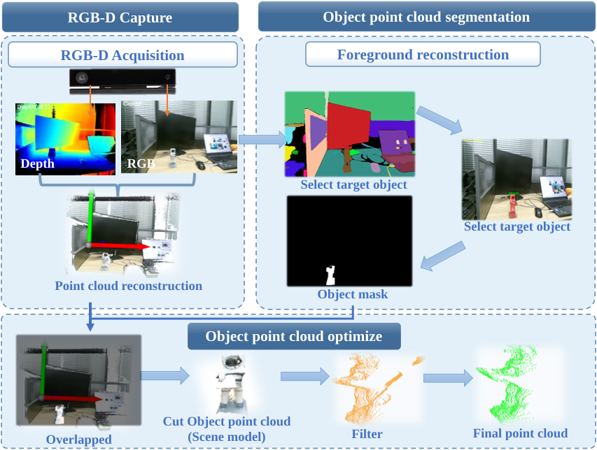
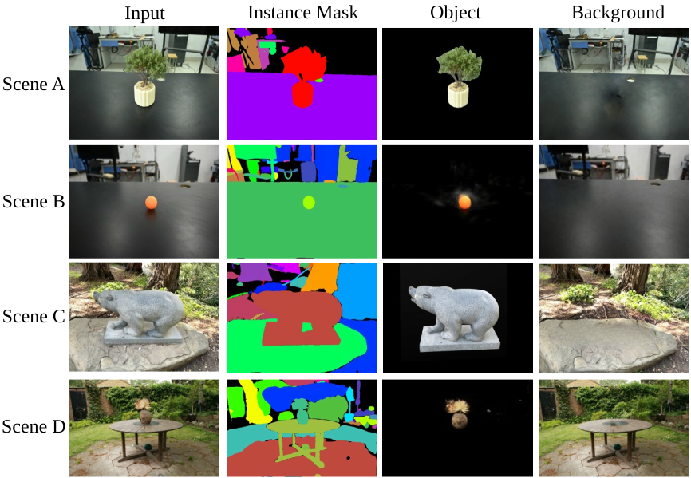
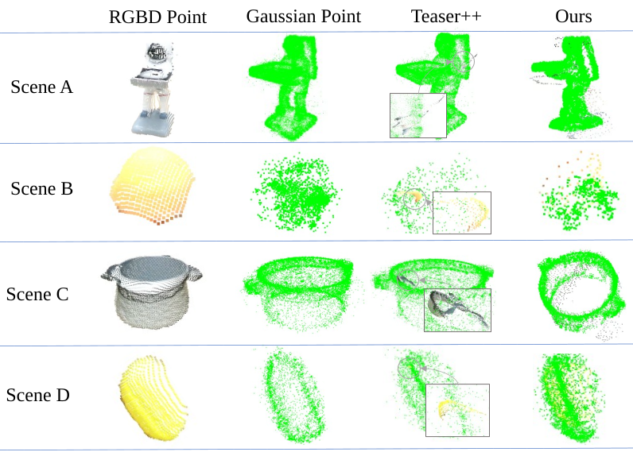
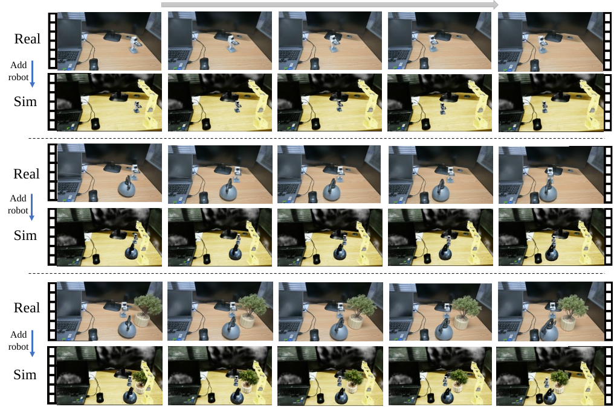
PSNR, SSIM, and LPIPS are used on the offline evaluation set for object-region and background-region reconstruction comparisons.
Object-state estimation is reported on the current online test sequence and compared quantitatively with the two classical geometric baselines listed in the manuscript.
The reported stage means sum to approximately 73 ms per processed update. This supports online interaction potential, but the arithmetic reciprocal is not measured loop throughput.
Large model weights, point clouds, training outputs, and USD/USDZ assets are intentionally excluded from GitHub. See the repository large-file instructions and paper-alignment notes for placement paths and configuration details.
@misc{anonymous2026dgsrsim,
title = {DGSRSim: Object-Level Decoupled 3D Gaussian Assets for Robot Simulation and Online State Synchronization},
author = {{Anonymous}},
year = {2026},
note = {Manuscript in preparation},
url = {https://rtdgs.github.io/DGSRSim/}
}